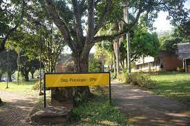
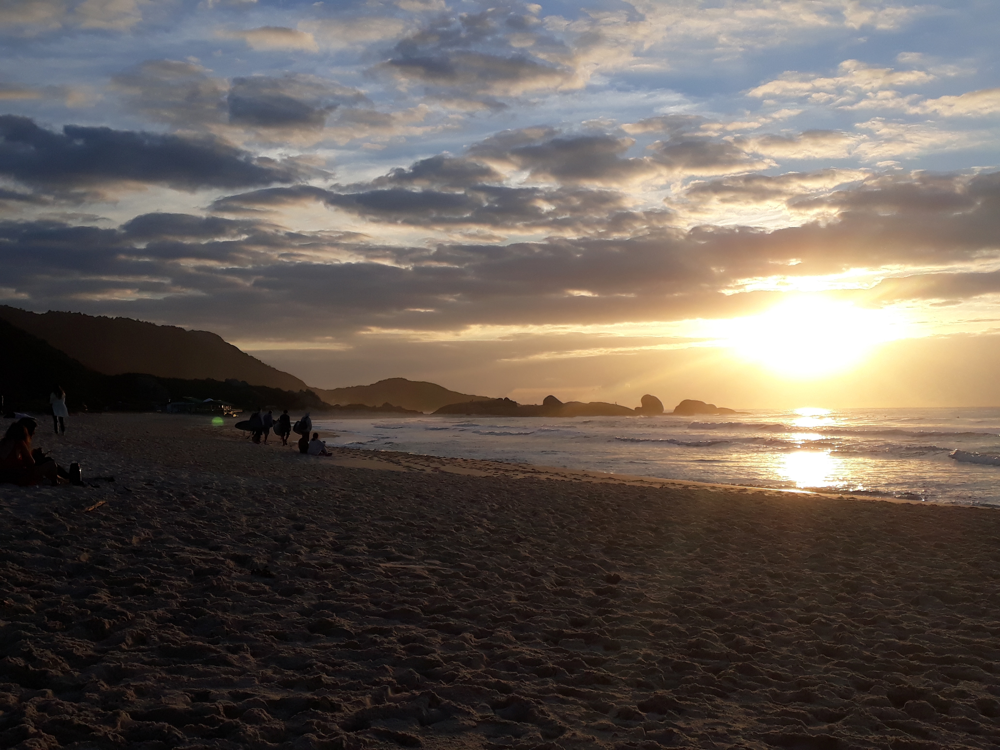

Minha História
Nascido e criado em São José dos Campos - SP, me apaixonei por tecnologia ainda criança. Como muitos programadores, fiquei fascinado quando meus pais compraram nosso primeiro computador 486; no momento em que digitei meu primeiro comando no DOS e obtive uma resposta do sistema, tive uma sensação que nunca consegui explicar exatamente, mas que tem mantido minhas mãos no teclado e meus olhos no monitor até hoje.
Como muito do conteúdo de informática (e a maioria dos jogos) era em inglês, desenvolvi um interesse pela língua ainda antes dos 10 anos, e passei a estudá-la em escolas desde os 13.
Durante o Ensino Médio, realizei um curso técnico, onde pude aprender formalmente os fundamentos do TI. Aos 16 anos me formei Técnico em Informática.
Paralelamente à minha paixão por tecnologia, comecei a desenvolver uma curiosidade extrema quanto à psique humana. Ficava por vezes me questionando sobre o comportamento e motivações das pessoas e essa curiosidade me levou ao curso de Psicologia da UFSCar. Lá, adquiri um conhecimento precioso que me alegro em dizer que vai me acompanhar por toda a vida.
Contudo, não me alegrava tanto ao pensar em desempenhar a profissão de Psicólogo, apesar de ter tido experiência em diversas áreas durante a graduação. Além disso, passava meu tempo livre pesquisando inovações em TI, escrevendo programas por curiosidade e fazendo bicos de manutenção de redes e computadores. Após refletir longamente sobre o assunto, resolvi voltar à área de tecnologia.
Escolhi o curso de Engenharia de Produção Elétrica na UFSC por abranger as áreas de gestão e tecnologia. Foi uma escolha difícil entre ela e Ciência da Computação, mas eu conhecia muitos engenheiros eletricistas formados que atuam nas mais diversas áreas do TI, e a engenharia parecia abrir mais portas no mercado.
Ao mesmo tempo em que me mudei pra Florianópolis para me dedicar ao curso de Engenharia de Produção Elétrica na UFSC, minha família se mudou para o interior da Paraíba, de volta às suas origens. Aqui pude me aprimorar tecnicamente em diversos campos de conhecimento, em um ritmo que confesso que não estava acostumado, mas com a ajuda de novos e antigos amigos hoje posso dizer que peguei o jeito :D
Entre as experiências mais memoráveis da minha graduação estão minha participação na EJEP - Empresa Jr. de Engenharia de Produção, meu intercâmbio de um ano em Dublin, na Irlanda e minha participacação na equipe de competição Ampera Racing.
Atualmente tenho feito cursos diversos em TI em plataformas digitais para me manter em dia com as tendências do mercado, e busco minha colocação profissional como Estagiário em Front-End :)